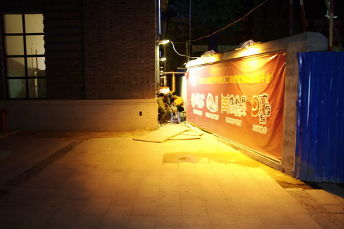
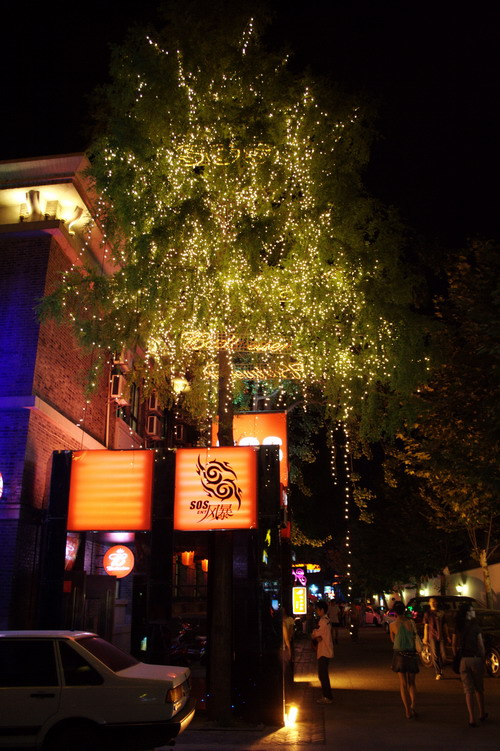

Canon EOS 350D @ Jul 20, 2006

16日买了Canon EOS 350D套机，包含一个EF-S 18-55/3.5-5.6镜头，一共CNY5900，同时买了1G的CF卡，UV滤镜、相机包，最后付了6000多元。柜台里一个18-200mm的镜头要3000多元，烧钱阶段开始了？？？当天晚上与Sherry、jiajialing一起去1912拍夜景试相机，到今天为止我还不能熟练使用它。机身塑料件的磨砂感有点怪怪的，指甲不小心划过的地方会留下白色痕迹，擦擦又没有了。究竟是磨砂还是做工粗糙？jiajialing开始拍摄100多张设置RAW格式文件，电脑和笔记本里没有可浏览与编辑的软件，急煞人了！去塞班准备带这架相机去。
Canon EOS 350D拍摄—Sherry

建设中的1912二期

1912霓虹下

9 Responses to “Canon EOS 350D”
2006-07-20
可以下载个微软Raw格式的浏览小程序，不过可能需要是正版的Windows系统！！！
http://download.microsoft.com/download/b/b/3/bb35c5c1-8059-4bef-83ba-3c44a5c0b2f1/RAWViewerSetup.exe
2006-07-20
编辑RAW格式文件用什么软件呢？
2006-07-20
自带的软件就可以。用苹果的Aperture
2006-07-20
还是这种黑乎乎的颜色用起来舒服些。
2006-07-21
下载了ACDSEE 8.0，包括注册码网络上都可以搜索到，不好意思占了便宜啦。这个软件可以编辑浏览RAW格式文件。相机自带软件还没研究~~
上班后好忙，下班的时候腰酸背痛，没劲儿！
2006-07-21
我的相机也是canon的，不过是卡片机，防抖不大好。
2006-07-21
350d用的工程塑料的确手感不太好，但是质量没有问题。编辑RAW格式可以用Capture One Pro或者PS CS2里带的RAW处理软件。
2006-07-21
TOO BIG, TOO Expensive, TOO GOOD and TOO COMPLEX
2006-07-22
youzi, 你老婆那么靓，你还要跑来长一句短一句。再漂亮的老婆也有看厌的时候? 你老婆那两条长腿...赞... 每次看见她穿短裙都想把她按倒就地正法....
Leave A Reply
存档只读，评论已关闭。